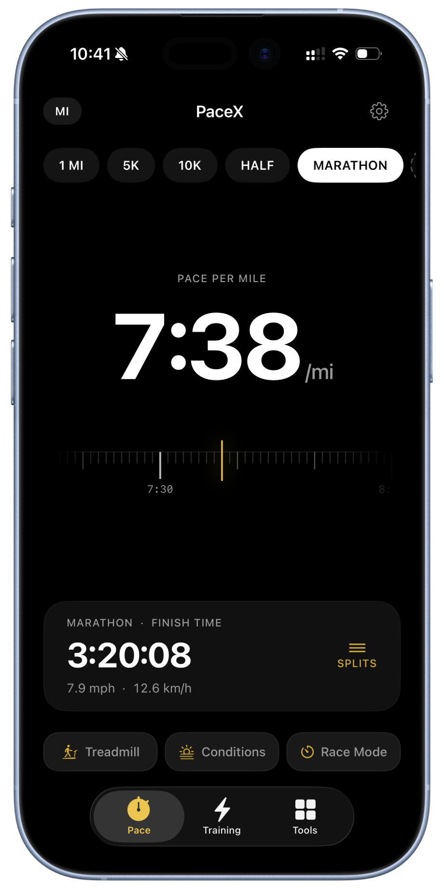

Goal pace
Translate a finish-time ambition into a pace you can take to the road.
Running companion
A focused training companion for understanding pace, setting a race goal, and knowing the next useful number before you run.
iPhone, Watch & widgetsRace planningTraining insights

Run with a plan
PaceX turns a goal into a practical pace, then keeps race prediction, remaining pace, and training zones within reach.
Translate a finish-time ambition into a pace you can take to the road.
Explore the relationship between today’s effort and the next start line.
Make the effort behind each run understandable, not abstract.
Keep the next useful pace and finish-time number close when it matters.
FAQ
It helps you turn a race goal into a practical pace, estimate race outcomes, and make training zones easier to understand.
PaceX is built for iPhone, Apple Watch, and widgets—so useful race-planning numbers are close before you run.
Use PaceX to think through pace and finish-time goals for short races, long races, and the distance you are training toward.
Start with the finish time you want, then use the corresponding pace to make the work between now and race day more concrete.
Yes. PaceX keeps pace and finish-time planning tools available on iPhone, Apple Watch, and widgets.